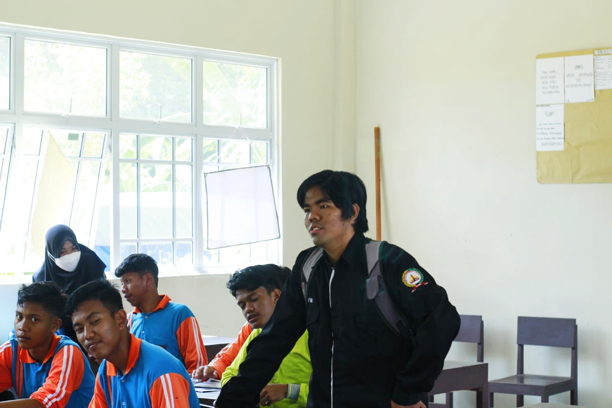

Bumi Hanguskan Korupsi Melalui Proses Pendidikan
Human error adalah penyimpangan yang mengakibatkan masalah atau insiden. Salah satu bentuk penyimpangan yang dilakukan manusia adalah korupsi. Kata "corruption" berasal dari bahasa Latin "corrumpere". Menurut UU No. 31 Tahun 1999 jo. UU No. 20 Tahun 2001, korupsi adalah perbuatan melawan hukum, penyalahgunaan kewenangan, kesempatan, atau sarana, memperkaya diri sendiri atau korporasi, dan merugikan keuangan atau perekonomian negara. Dari undang-undang ini, kita dapat menyimpulkan bahwa korupsi adalah perbuatan negatif dan melanggar hukum karena menguntungkan pribadi dengan merugikan orang banyak.
Menurut penulis, korupsi terjadi karena rendahnya pendidikan moral dan kepekaan sosial pada peserta didik. Korupsi lebih dipicu oleh hasrat individu yang tidak puas dengan kekayaannya. Melalui korupsi, rasa kemanusiaan hilang dan ketidakjujuran muncul, yang menggambarkan rusaknya moral. Ketika moral gagal terbentuk, rasa kepedulian, tanggung jawab, dan kepekaan sosial juga hilang. Harta yang dikorupsi seharusnya dialokasikan untuk masyarakat yang lebih membutuhkan. Dampak ini paling dirasakan oleh masyarakat menengah ke bawah, sehingga korupsi harus dibasmi dari negeri ini.
Pada tahun 2021, kasus korupsi di Kabupaten Karimun meningkat. Jaksa menangani tiga kasus korupsi. Pertama, korupsi Anggaran Pendapatan dan Belanja Desa (APBDes) tahun 2020 di Tanjung Pelanduk, Kecamatan Moro, sebesar Rp 226 juta. Mantan Kepala Desa Tanjung Pelanduk, Sudirman Syafrizal, ditetapkan sebagai tersangka. Kedua, korupsi pengelolaan dan penggunaan APBDes di Desa Gemuruh, Kecamatan Kundur Barat tahun 2020 sebesar Rp 211 juta dengan tersangka Ns, mantan bendahara desa. Ketiga, korupsi SPPD fiktif di DPRD Karimun sebesar Rp 5,9 miliar dengan tersangka Hh, mantan bendahara DPRD Karimun.
Pendidikan harus memberikan bekal moral, kejujuran, dan keberanian kepada peserta didik sebelum mereka terjun ke masyarakat. Perilaku tidak jujur seperti korupsi bisa diantisipasi melalui sistem pendidikan yang berfokus pada nilai moral. Pendidikan moral harus dimulai sejak dini agar peserta didik terbiasa dan mengenalnya.
Di dunia perkuliahan, setiap fakultas bisa mendiskusikan aspek korupsi sesuai bidangnya. Misalnya, mahasiswa hukum membahas apakah korupsi terjadi karena aturan yang lemah dan penegakan hukum yang kacau, mahasiswa ekonomi menganalisis penumpukan kekayaan di tengah penderitaan rakyat, dan mahasiswa pendidikan membahas bagaimana pendidikan saat ini hanya mengajarkan ketaatan tanpa mendidik keberanian membela rakyat tertindas. Jika proses pendidikan berhasil, mahasiswa akan menerapkan nilai-nilai yang mereka pelajari saat mereka terjun ke masyarakat. Pendidikan harus membentuk manusia yang manusiawi, bukan sekadar berprofesi.
Saat ini, tinggal bagaimana pemerintah mengkonsepkan agar pendidikan berjalan sesuai harapan.
Penulis: Rizky Nurul Suhendra